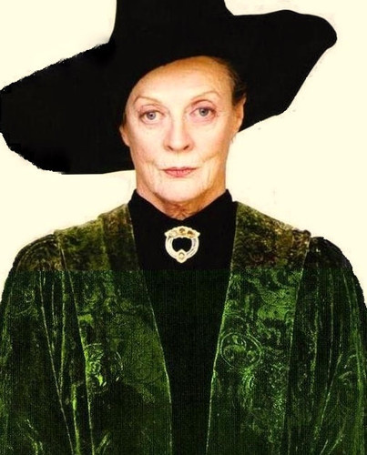
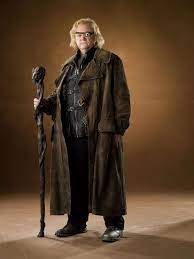

Dumbledore a Roxfort Boszorkány- és Varázslóképző Szakiskola igazgatója és a Főnix Rendjének vezetője.
Roxforti Igazgató
Perselus Piton
Piton professzor egykoron bájitaltan tanár volt, majd később sötét varázslatok kivédését oktatott.
Roxforti Professzor

Minerva Mcgalagony
Mcgalagony professzor átváltoztatástant oktat.
Roxforti Professzor

Alastor Mordon
Mordon professzor egykoron Sötét varázslatok kivédése tárgyat oktatta.
Roxforti Professzor
Tantárgyak
Bájitaltanórák alkalmával a tanulók különböző főzetek, esszenciák, mérgek és ellenmérgek elkészítési fortélyait tanulhatják meg. Az első kötetben a bájitalok mestere Perselus Piton professzor, de amikor a hatodik kötet folyamán átveszi a Sötét varázslatok kivédése nevű órának az oktatását, melyről mindig is álmodott, egy már nyugalmazott tanerő, Horatius Lumpsluck tér vissza a kastély falai közé, és veszi kezébe az ifjú bájitalkeverők tanítását. A történetben Harry Potter nem kedveli a tárgyat, de a hatodik részben kezébe jut egy titokzatos Félvér Herceg könyve, így nagy sikere lesz benne. Az ötödikben letett RBF vizsgája a tantárgyból V(várakozáson felüli) eredményt ér el.
Az órákon a diákok olyan bűbájok sokaságát sajátítják el, mint például tárgyak lebegtetésére szolgáló levitációs bűbáj.
A tanulók megismerkednek a csillagos égbolt objektumaival, a csillagokkal és a bolygókkal.
Különböző mágikus növények, azok felhasználásának, illetve gondozásának tudománya.
A jövőbelátás képességének, a harmadik szem titkainak kiaknázása.
Ahogy nevében is benne van, arra szolgál, hogy a tanulók megtanulják megvédeni magukat a sötét varázslatokkal, gonosz teremtményekkel, feketemágusokkal szemben. A tantárgyat oktató szaktanár évről évre változik, amióta Voldemort elátkozta az állást (mivel nem vették fel tanárnak).
A számok mágikus tulajdonságai.
Tárgyak és élőlények transzformációja. Az egyik legbonyolultabb és legveszélyesebb a tantervben szereplő mágiák közül.
Binns professzor andalító monológjai vezetik végig a tanulókat a varázsvilág történelmén.
A diákok megtanulnak seprűn repülni, közlekedni.
A diákok arról tanulnak, hogy is néz ki a muglik mindennapja, hogyan épül fel a mugli társadalom.